The
Chance Project (El Proyecto Oportunidad)
By Maria Soledad, Project Founder & Director
photo
- Maria Soledad (R) first student (L)
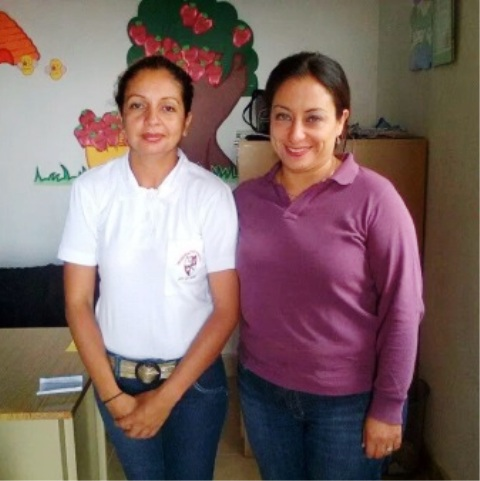
WHY
is the Chance Project Important? Most of these
parents were abandoned or abused kids, with no education opportunity, people
with no opportunity to learn job skills. Most
of the mothers are single, so they leave their kids alone or under not
responsible adult supervision.
WHAT
is the Chance Project? We contact parents
through Home Social Workers to see if they meet
the requirements and have shown interest and determination to get their kids
back. After being referred, their situation will be evaluated (job
skills, experience, education, interests
and abilities).
HOW
does the Chance Project Work? A
parent will
bring information of three places
to study. Chance personnel
will visit the suggested places and evaluate them to choose one.
The parent will receive a scholarship. Their work, attendance and
responsibility will be supervised. Parents
will not receive the money it will be paid by us directly to the schools. They
will be responsible for their own transportation expenses. They also will attend
a monthly meeting in the project's office to learn about administration,
nutrition, health, emotional support and encouragement. We'll also share the
Good News of Jesus in these meetings.
WHO
can help? Everyone, even though, it is
important to get Guatemalan community involved
in the raising money. Sponsors will be informed periodically.
I am working with the first student of The Chance Project already; she is a 29-year-old mother of five girls. The father of the girls left and she is faced with the responsibility by herself. She works in a tools store. If she sells, she earns money, otherwise she won't. She went to the judge and asked for help. The girls were sent to a home for girls. Her father abandoned this mother at the age of nine. So she only got to the third grade. At that age she started selling candies in the street, cleaning a restaurant and the tools store. None of these jobs could give her the money to feed 5 girls.
She
came to my office one day and said… “I wish I could study”… so she
became the first person in The Chance Project.
She came back three days later with three booklets of beauty schools she could
go to. We decided together that she
should go to the one that is authorized by the Ministry of Education. She is
already earning money with the new career. Her girls are back home; she will be
graduating this November. Her name is Zuly Elizabeth Zamora Contrera.
Students for 2017...
Katy, Berta and Maria Luisa are studying sewing; Lidia and Maria Ana are studying cooking; Jacinta and Dorita are in beautician school and Elsi is studying English as a second language.
=======
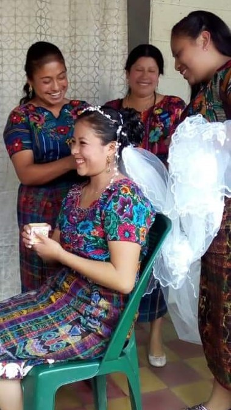
Vilma, one of our students, fixing the hair of a Mayan bride for her wedding
==============
Chance Project Celebrates Five (5) Years of Ministry in November 2018
Click Chance 5yr Report.pdf for Testimonies & Pictures of This Ministries
During the celebration event, each woman shared her personal testimony and how the Chance Project was helping her. They are learning to be self-sufficient in a trade of either sewing, cooking or as a beautician. We hope the pictures below help you understand the importance of this ministry to single moms who have been abandoned by their husbands and have no other means to support their families. Thank you for giving them a "chance"!!!
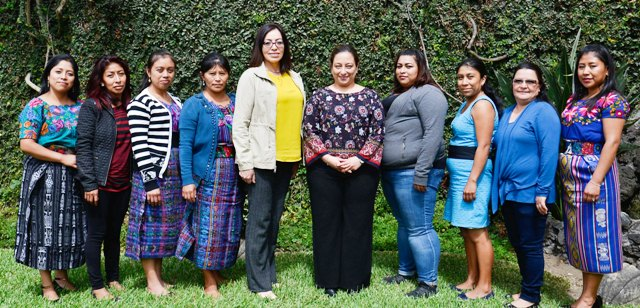
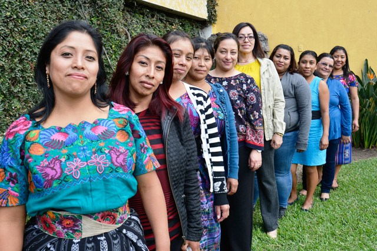
Director Soledad (6th from L) with the 9 women in training
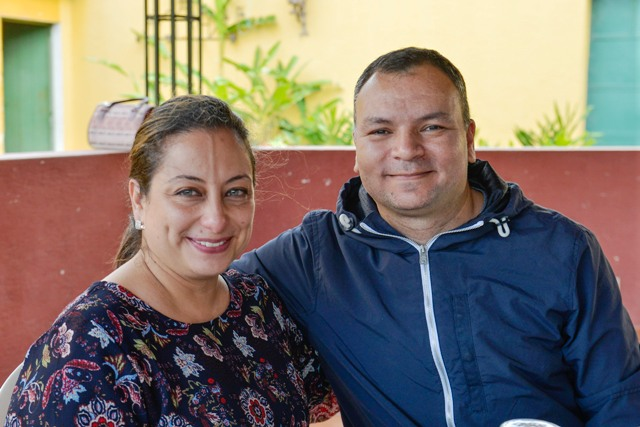
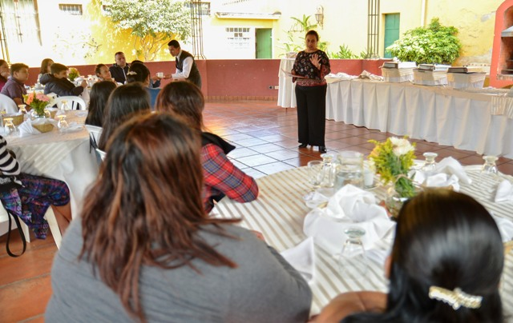
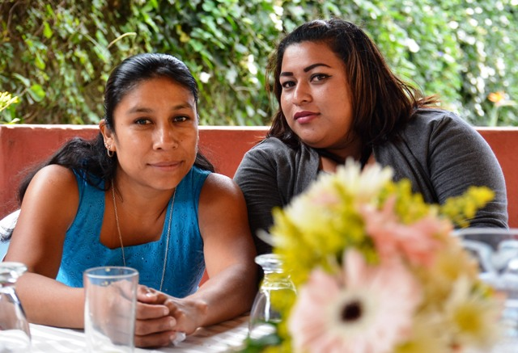
Top picture: Soledad & husband Herbert. Bottom pictures: Soledad speaks to the women (L), two women in training (R)
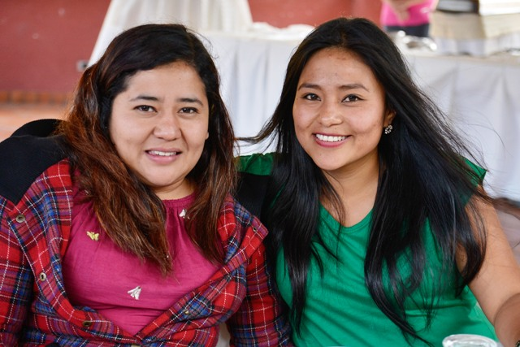
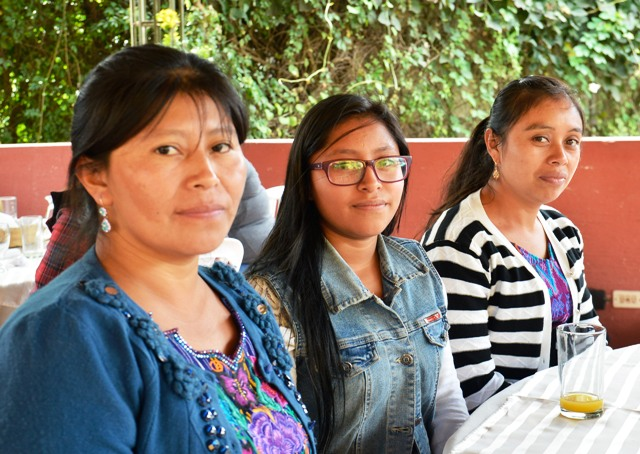
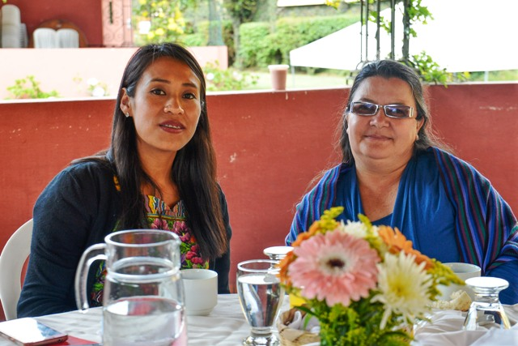
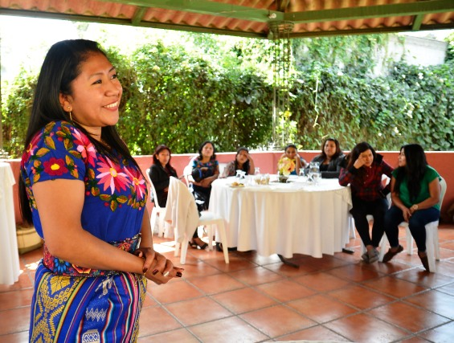
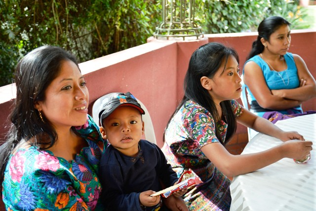
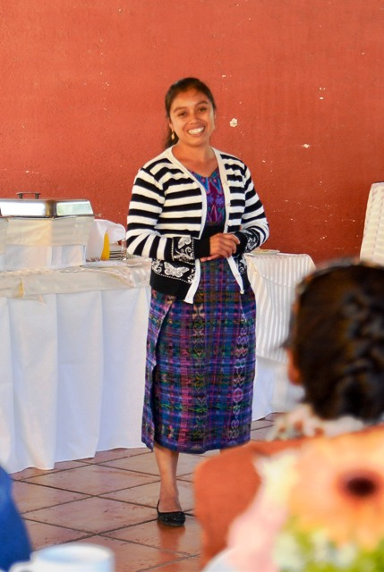
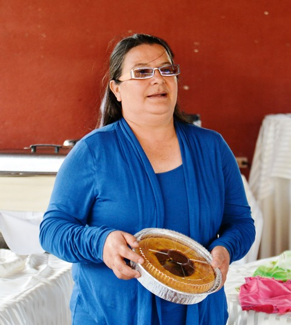
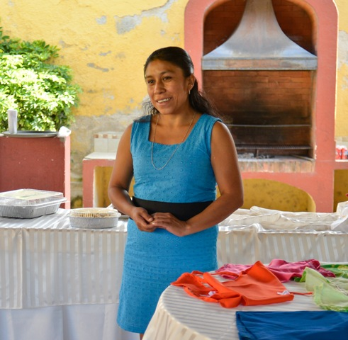
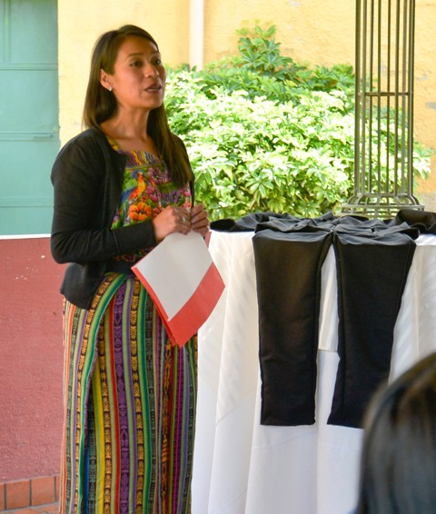
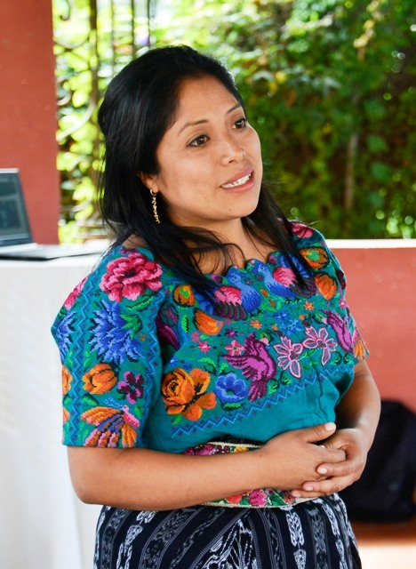
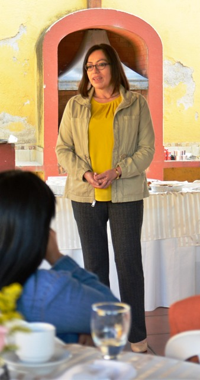
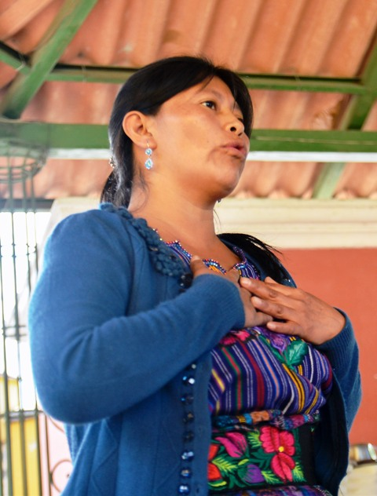
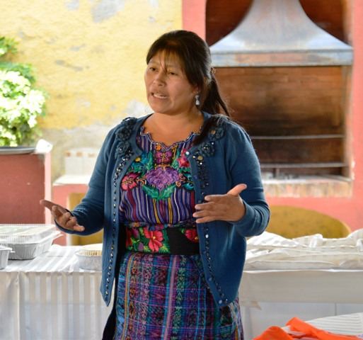
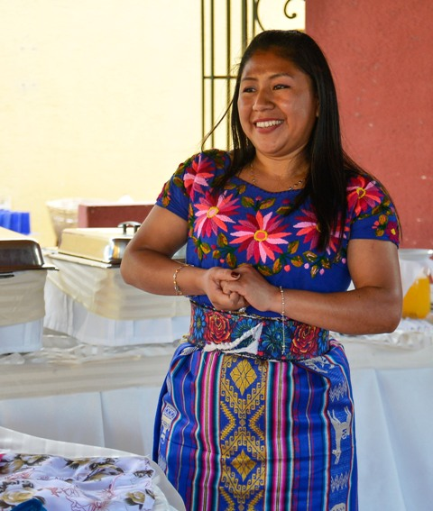
Women giving their testimonies
==============
A Success Story of Giving One a Chance
By Director Soledad
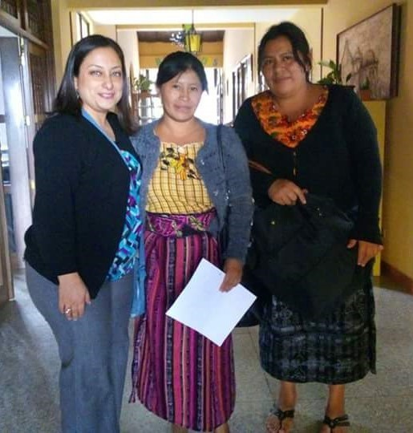
She finished that first year with great grades. She showed she was committed to it. The trainer suggested Ana should continue studying the next level in cooking school because she was determined to learn and succeed. We decided to give her the chance. Ana was the first lady who received a scholarship for a 2nd year in bakery school.
In January 2018, we were contacted by a home for girls, "Lazos de Amor". They wanted us to teach their students work skills. So we decided to give Ana the chance again. We offered her the job and an extra course so she could learn even more. Ana trained the girls in the home for two months; the directors of the home were very pleased and grateful.
I am very excited as I write this story especially because it ends in a great way. Maria Ana is selling bread in her community but also teaching other ladies how to bake. God is not only showing His purpose for Ana's life but for Proyector Oportunidad...we are opening a bakery in Sumpango, Guatemala where Ana will work and teach other ladies...isn't it amazing?